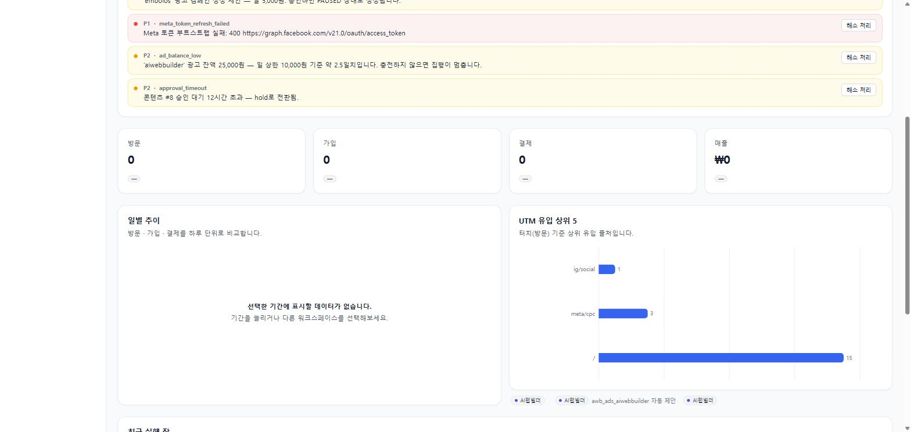
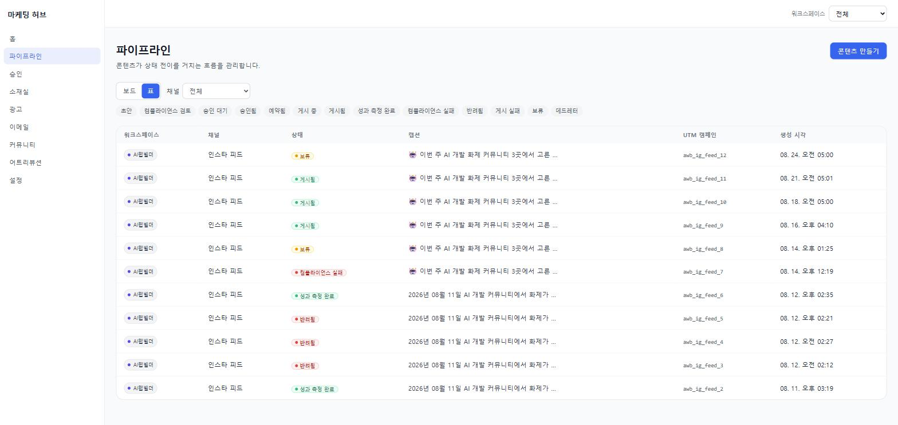
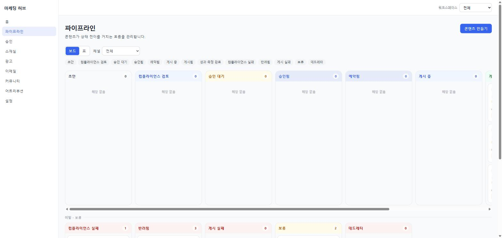
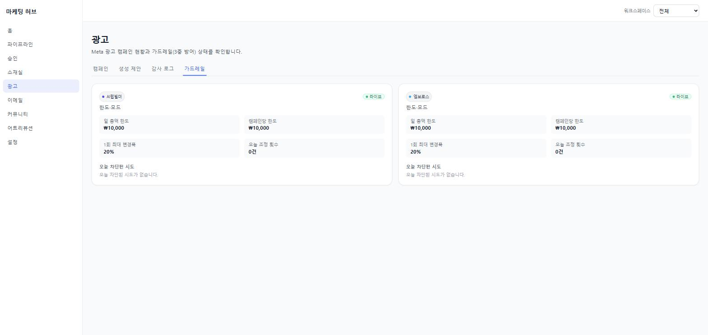
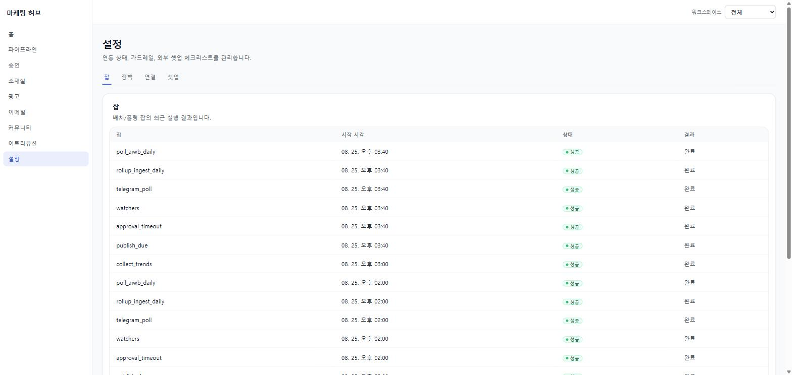
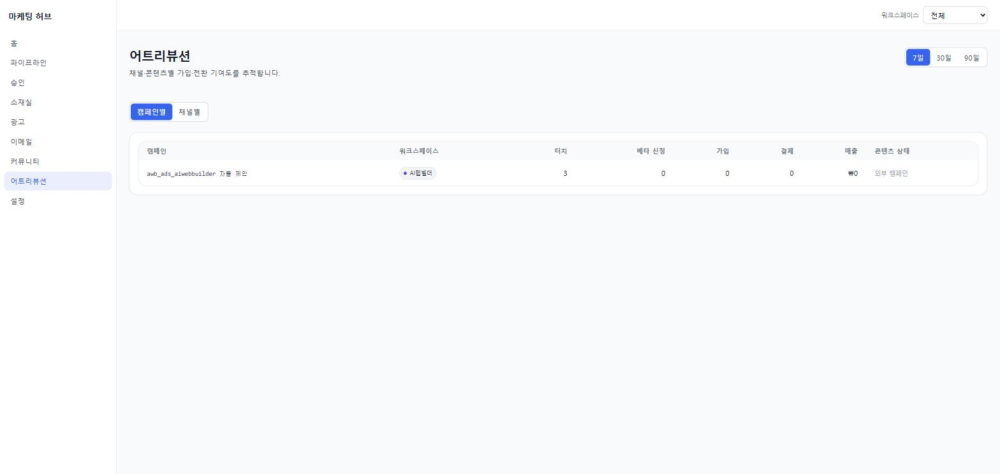
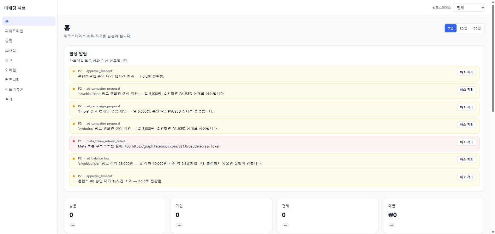

01 / OVERVIEW
관제 홈
워크스페이스별 획득 지표를 한 화면에 모읍니다. 좋아요가 아니라 방문 → 가입 → 결제 → 매출을 같은 축에 놓아, 콘텐츠가 실제 전환을 만들었는지로만 판단하게 했습니다.
- 기간7 / 30 / 90일 토글
- 차트일별 추이 · UTM 유입 상위 5
- 빈 상태"데이터 없음" 대신 다음 행동을 제시
두 개의 SaaS 플랫폼이 만드는 마케팅 활동을 수집 → 지능 → 게이트 → 실행 → 피드백 5계층으로 자동화하고, 하나의 대시보드에서 관제하는 시스템입니다. 북극성 지표는 좋아요가 아니라 가입·결제 전환입니다.
운영 중 · Fly.io v60
SaaS 두 개를 혼자 운영하면 마케팅은 가장 먼저 방치됩니다. 콘텐츠를 만들 시간도, 성과를 추적할 시간도 없고, 광고는 "잘못 눌러서 돈이 나가는" 리스크 때문에 아예 켜지 못합니다.
각 계층은 아래 계층만 알고 위 계층은 모릅니다. 예를 들어 실행 계층은 Meta 연동이 실제 API인지 스텁인지 알지 못한 채 동작합니다.
compliance 룰 + LLM 2단
tiering
approval
tokens/ Meta 회전
orchestrator/ advisory lock
core/ crypto · idempotency · rate_limit
상태 컬럼에 값을 직접 대입할 수 없습니다.
모든 전이는 assert_transition()을 거치고, 허용되지 않은 전이는
ValueError로 즉시 실패합니다.
dead_letter는 재시도 예산 소진 지점이지 콘텐츠 결함이 아니므로,
외부 원인(권한·토큰)이 해소되면 같은 캡션·미디어로 되살릴 경로를 남겨뒀습니다 —
실제로 Instagram 권한 부족으로 발행이 3회 소진돼 DB를 직접 만질 뻔한 사고에서 나온 설계입니다.
아래는 목업이 아니라 현재 운영 중인 대시보드를 그대로 캡쳐한 것입니다. 데이터·시각·상태는 캡쳐 시점(2026-08-25)의 실제 값입니다.

워크스페이스별 획득 지표를 한 화면에 모읍니다. 좋아요가 아니라 방문 → 가입 → 결제 → 매출을 같은 축에 놓아, 콘텐츠가 실제 전환을 만들었는지로만 판단하게 했습니다.

상태머신 13단계가 그대로 UI가 됩니다.
보류 · 게시됨 · 컴플라이언스 실패 · 반려됨 · 성과 측정 완료가
색으로 구분되고, 각 건에 utm_campaign이 붙어
나중에 전환을 역추적할 수 있습니다.

정상 흐름은 위쪽 가로 트랙, 이탈·보류는 아래쪽 별도 트랙으로 뗐습니다. 막힌 콘텐츠가 정상 흐름에 섞여 보이면 "지금 무엇이 멈춰 있는가"를 한눈에 못 잡기 때문입니다.

광고는 오조작 하나로 예산이 증발합니다. 그래서 상한을
코드 상수로 두고, 운영 설정은 더 엄격한 방향으로만 반영되게 했습니다
(effective() = min(코드상수, 설정)).
화면에는 차단된 시도까지 기록됩니다.

17개 잡이 6개 레인에서 돌고, 실행 결과는 전부 job_runs에 남습니다.
같은 잡이 겹쳐 돌지 않도록 PostgreSQL advisory lock으로 감싸고,
건별로는 FOR UPDATE SKIP LOCKED를 씁니다.

캠페인 한 줄에 터치 → 베타 신청 → 가입 → 결제 → 매출이 이어집니다. GA4를 붙이지 않고 자체 이벤트로 구현했는데, UTM에서 가입까지의 조인은 GA4로는 불가능하고 태그 삽입이 더 침습적이라는 판단이었습니다.

자동화의 실패 모드는 "조용히 멈추는 것"입니다. 토큰 갱신 실패, 승인 타임아웃, 광고 잔액 부족을 P1 / P2 우선순위로 띄우고 각각 해소 처리 경로를 답니다.
"돌아가게 만드는 것"과 "혼자 운영해도 안 터지게 만드는 것"은 다릅니다. 아래는 후자를 위해 코드 레벨에 못 박은 불변조건들입니다.
예산 상한을 guardrails/limits.py 코드 상수로 두고,
런타임 설정은 min(코드상수, 설정)으로만 반영합니다.
DB를 고쳐도 상한은 내려가지 않습니다.
왜: 운영 설정이 안전장치를 무력화할 수 있으면 그건 안전장치가 아닙니다. 완화하려면 배포가 필요하도록 만들었습니다.
채널·상태·티어·액션 어휘를 models/vocab.py 한 곳에만 정의하고,
STATUS_TRANSITIONS가 상태머신을 강제합니다.
문자열 리터럴 재정의는 테스트가 차단합니다.
왜: 상태 문자열이 여러 곳에 흩어지면 오타 하나가 조용히 흐름을 끊습니다. 어휘를 하나로 묶어 컴파일 타임에 가깝게 잡습니다.
① PostgreSQL advisory lock으로 잡 중복 실행 차단
② 자연키 ON CONFLICT는 누적이 아닌 대입
③ 건별 트랜잭션 + FOR UPDATE SKIP LOCKED.
왜: 크론은 재시도되고 겹칩니다. 한 겹만 두면 "같은 글이 두 번 올라가는" 사고가 언젠가 납니다.
Meta 연동은 disabled / stub / dryrun / live 네 모드를 갖고,
상위 계층은 어느 모드인지 모릅니다.
토큰이 없어도 스텁이 가짜 ID를 반환해 전 구간이 완주됩니다.
왜: 외부 API가 없으면 테스트가 막히는 구조는 결국 테스트를 안 쓰게 만듭니다. 모드를 하위로 밀어넣어 상위 로직을 항상 검증 가능하게 했습니다.
외부로 나가는 모든 행위는
send_email() · apply_ad_action() · publish()
세 함수만 통과합니다. 다른 경로의 발송·집행·발행은 금지입니다.
왜: 검증 지점이 흩어지면 언젠가 하나를 빠뜨립니다. 좁은 통로 3개로 모아 여기서만 가드레일을 검사합니다.
orchestrator/runner.py의 스크러버가 오류 메시지의 URL 쿼리스트링을
제거한 뒤 기록합니다. 개별 핸들러가 정제를 빠뜨려도
로그와 API 응답에 시크릿이 남지 않습니다.
왜: 실제로 토큰이 오류 로그에 섞여 나간 적이 있습니다. "각자 조심한다"가 아니라 통과 지점에서 일괄 처리하도록 바꿨습니다.
새 스택을 고르는 대신, 이미 운영 중인 두 플랫폼과 같은 인프라를 썼습니다. 혼자 운영하는 시스템에서 스택이 늘어나면 장애 대응 비용이 그만큼 늘기 때문입니다.
| 레인 | 주기 | 잡 |
|---|---|---|
| every-100m | 100분 | publish_due · approval_timeout · watchers · telegram_poll · rollup_ingest_daily · poll_aiwb_daily |
| every-6h | 6시간 | collect_trends |
| nightly | 매일 03:00 KST | refresh_tokens · poll_embolos_snapshot · bandit_update · media_privatize |
| morning | 매일 05:00 KST | generate_content · adjust_ads |
| weekly | 월 09:00 KST | weekly_report |
| manual | 수동 | 잡 이름 지정 실행 |
100분 주기는 GitHub Actions 무료 한도(월 2,000분)를 지키기 위한 선택입니다.
cron 엔트리 3개(0 0-20/5 · 40 1-21/5 · 20 3-23/5)를 조합해
정확히 100분 간격을 만들고, 발행·승인 반영이 최대 100분 지연되는 것을 감수했습니다.
2026년 8월 3일 첫 커밋부터 8월 24일까지 22일간, 설계·구현·배포·운영을 혼자 수행했습니다.
CI에 || true를 쓰지 않습니다. 실패는 실패로 남깁니다.
이전 프로젝트에서 CI가 실패를 무시하도록 설정돼 회귀를 몇 주 동안 숨긴 적이 있었고,
그때부터 "통과한 것처럼 보이는 파이프라인"을 가장 큰 리스크로 봅니다.
코드 리뷰가 "없는 코드"를 잡지 못한다는 것도 같은 경험에서 배웠습니다 —
그래서 명세와 산출물을 별도로 대조하는 단계를 뒀습니다.